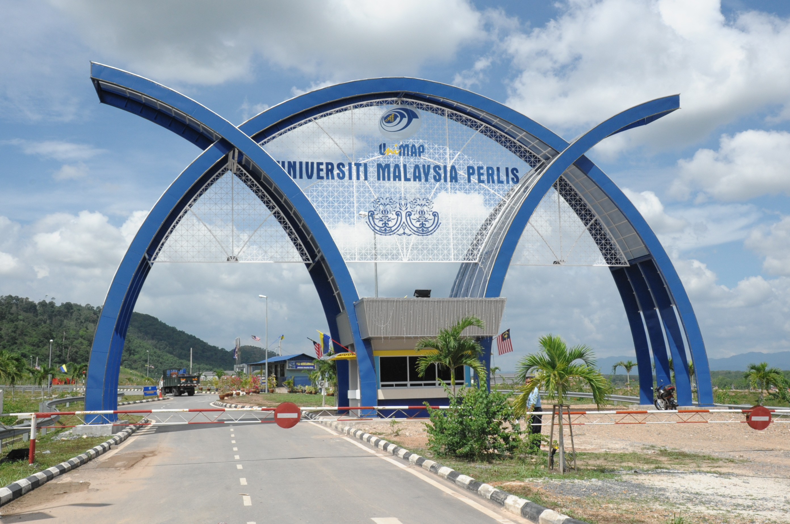
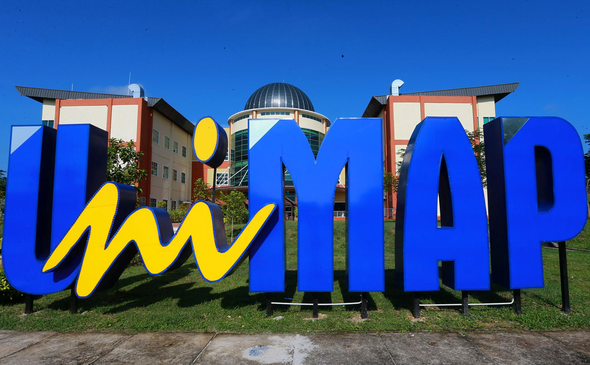
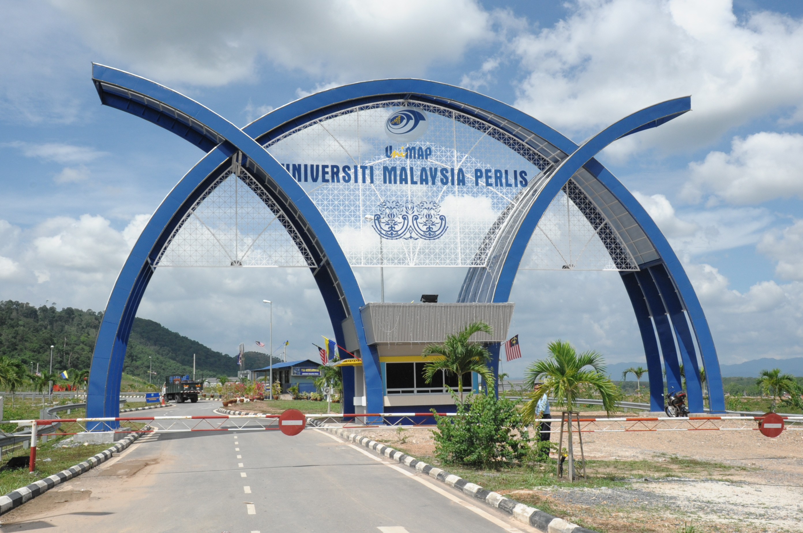
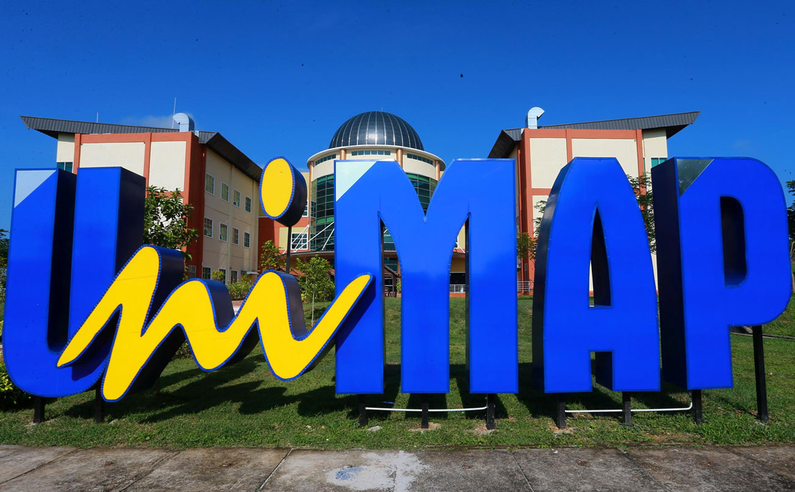

Dean's Message Thank you for your interest in the Faculty of Electronic Engineering Technology at Universiti Malaysia Perlis. As the world undergoes Forth industrial revolution, fusion of technological advancements and human capacities are bringing unprecedented changes to the industrial and manufacturing needs. Big data analytics, internet of things, cyber-physical systems, artificial intelligence, wireless technologies, 5G networks are among the driving pillars of changes. That is why the lecturers and staffs of FTKEN at Universiti Malaysia Perlis continue to move forward to find ways to provide quality education that meets the industrial needs and student’s expectation. As the Dean of FKTEN, I am determined to build on our well-established position as a top and of the very best international centres of education and research. We pay close attention to industry trends and the needs of our students for their real-world experiences. We set high expectations for our students and establish engaging curricula and learning environments. We foster future engineers and technologists with skills and experiences needed to succeed in a complex, technology-driven, global society.Our diverse faculty offers a wide array of exciting undergraduate and postgraduate programmes through a blend of theoretical and application in the curricula to educate a diverse group of students in the field of electronics. We pride ourselves on giving our students an exciting education programme that is relevant to the needs of both industry and to the engineering profession, and which prepares students for a wide range of careers. I invite you to explore our website and learn more about the many exciting majors available in FKTEN. Please visit us often and discover new insights as we continue to grow and update our website. Associate Profesor Ir. Ts. Dr. Razaidi Hussin Dean Faculty of Electronic Engineering & Technology
 


